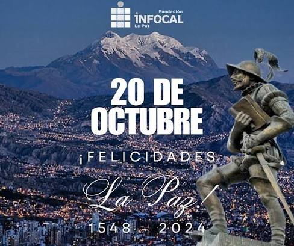
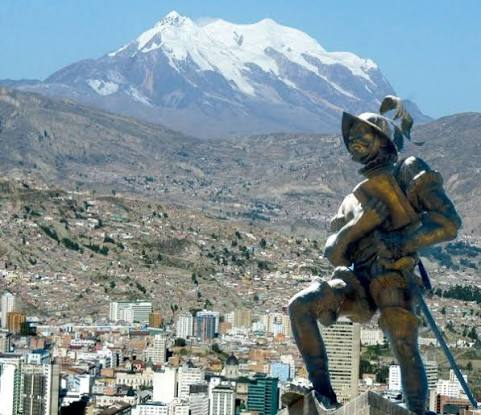
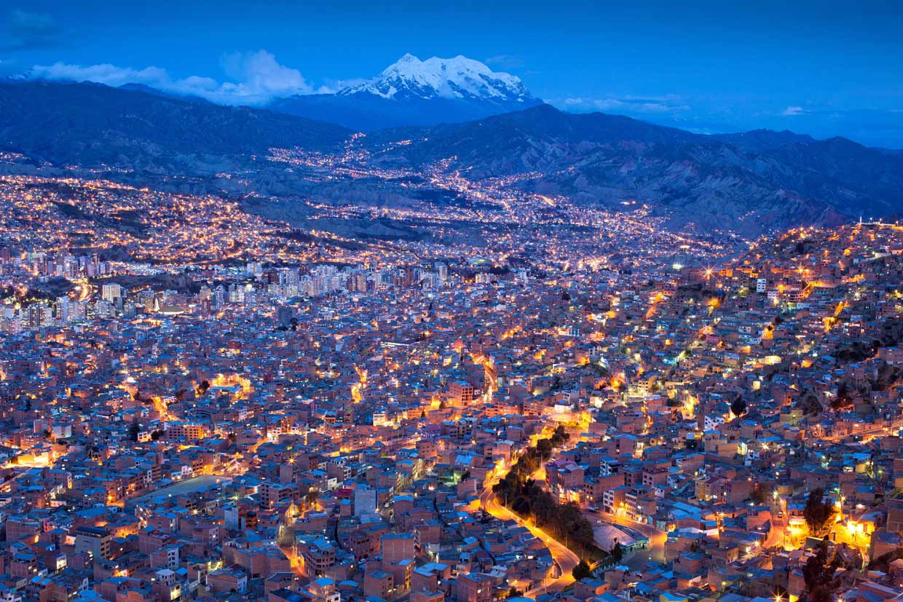
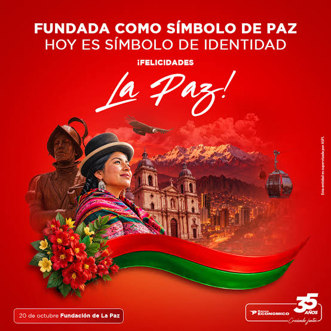

El 20 de Octubre se conmemora la primera acta de fundación de la ciudad de Nuestra Señora de La Paz, hoy conocida como La Paz, sede de gobierno del Estado Plurinacional de Bolivia, capital del homónimo departamento y el centro político y administrativo más importante del país. Su singular ubicación geográfica, a más de 3.000 m de altura, así como su variedad y riqueza intercultural, han permitido que La Paz sea nombrada, en el 2014, como una de las Nuevas 7 Ciudades Maravilla del Mundo.
 |  |
 |  |